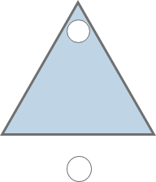

How many triangle in picture?
เฉลย ตอบ 9
เพราะว่า
สามเหลี่ยมรูปเล็กมีทั้งหมด 4 รูป สามเหลี่ยมขนาดกลางมีทั้งหมด 4 รูป และสามเหลี่ยมใหญ่มี 1 รูปรวมเป็น 9
How many triangle in picture?
เฉลย ตอบ 9
เพราะว่า
สามเหลี่ยมรูปเล็กมีทั้งหมด 4 รูป สามเหลี่ยมขนาดกลางมีทั้งหมด 4 รูป และสามเหลี่ยมใหญ่มี 1 รูปรวมเป็น 9

Which one is the right one ?


เฉลย ตอบ รูปที่ 1 (ซ้าย-บน)
เพราะว่า
เราจะสังเกตุความคล้ายคลึงของแต่ละอันได้ดังนี้
1.) รูปวงกลมข้างในจะเปลี่ยนตามมุมของมัน (ซ้าย -> บน -> ขวา)
2.) ทุกครั้งที่เปลี่ยนสีของวงกลมข้างในจะสลับดำขาวไปมา
ดังนั้นข้อนี้จึงตอบข้อ 1 เพราะรูปที่แล้ววงกลมเป็นสีขาว

Which one is the right one ?
เฉลย ตอบ รูปที่ 4 (ขวา-ล่าง)
เพราะว่า
ถ้าเราตัดสิ่งที่ไม่จำเป็นออก(ในที่นี้คือ สี และ ทรงต่างๆด้านนอก) เราจะสังเกตุเห็นแค่ รูปทรงเลขาคณิตด้านในที่เรียงเป็นแพทเทิร์น และใหญ่ขึ้นตามลำดับเท่านั้นเอง
ถ้าต้องการข้อความว่า "DESPACITO" ต้องกดเป็นรหัสอะไรบ้าง (เช่น I LOVE YOU คือ 444/0/555/666/888/33/0/88 เป็นต้น)
A.) 3/33/7/3/2/22/3/666/7
B.) 3/33/7777/7/2/222/444/8/666
C.) 3/33/55/3/3/666/8/222/666/6
D.) 3/33/7777/7/33/777/2/3/666
เฉลย ตอบ B.
เพราะว่า
A.) D/E/P/D/A/B/D/O/P
B.) D/E/S/P/A/C/I/T/O
C.) D/E/K/D/D/O/T/C/O/M
D.) D/E/S/P/E/R/A/D/O
จอร์นได้ส่งข้อความลับด้วยการเข้ารหัส แต่รหัสได้หลุดออกมา คือ "QENTBAVPN" ซึ่งคีย์ในการถอดรหัสดังรูป
A.) DANCING
B.) DRAGOONY
C.) DRAGONICA
D.) DAZZLING
เฉลย ตอบ C.
เพราะว่า A = N /
B = O /
C = P /
D = Q /
E = R /
F = S /
G = T /
H = U /
I = V /
J = W /
K = X /
L = Y /
M = Z
HELLO = URYYB / QENTBAVPN = DRAGONICA
ครึ่งชีวิต(Half-Life) คือ จำนวนเวลาที่ทำให้ปริมาณสารลดลงเหลือครึ่งหนึ่งของปริมาณของสารเอง เช่น C-14 มีครึ่งชีวิตคือ 5,730 ปี หมายความว่า ทุกๆ 5,730 ปี C-14 จะมีปริมาณลดลงเหลือครึ่งหนึ่งของปริมาณทั้งหมดในช่วงเวลานั้น มีนักเคมี ได้ค้นพบสารใหม่ 2 สาร คือสาร A และสาร B โดยที่สาร A มีครึ่งชีวิตเท่ากับ 30 นาที และสาร B มีครึ่งชีวิตเท่ากับ 1 ชั่วโมง นักเคมีคนนี้สงสัยว่าถ้าเขาเตรียมสาร A ไว้ 800g แล้วตั้งทิ้งไว้ 1 ชั่วโมง แล้วหลังจากนั้น ก็นำสาร B จำนวนหนึ่ง แล้วปล่อยไว้เป็นเวลา 2 ชั่วโมง ปรากฏว่าปริมาณของสาร A และ B เท่ากัน จงหาว่านักเคมีคนนี้นำสาร B มากี่กิโลกรัม
A.) 5 kg
A.) 5 kg
C.) 0.05 kg
D.) 0.005 kg
เฉลย ตอบ C
เพราะว่า
สาร A 800 กรัม นั้นจะโดน ตัดครึ่งชีวิตทุกๆ 30นาที และสาร B จะโดนตัด ทุกๆ60นาที จากนั้นเมื่อได้ตั้งสาร A ทิ้งไว้ 1ชม. จะเป็นดังนี้
0 -> 0.5 -> 1 = จำนวน ชม.
800 - > 400 -> 200 = สารA
จากนั้นได้ตั้งสาร B พร้อมกับสาร A อีก2 ชม. รวมเป็น3 ชม. แต่ไม่ทราบสาร B สาร A จึงเป็นดังนี้
0 -> 0.5 -> 1 -> 1.5 -> 2 -> 2.5 -> 3 = จำนวน ชม.
800 - > 400 -> 200 -> 100 -> 50 -> 25 -> 12.5 = สารA
แต่ จากโจทย์ เมื่อครบ 3 ชม. สาร A และ สาร B มีปริมาณเท่ากัน ดังนั้นจึงนำสาร A ณ เวลา 3 ชม.
มาคิดครึ่งชีวิตย้อน โดยการคูณ 2 แต่สาร B จะคิดครึ่งชีวิตทุก 1 ชม. สารจะเปลี่ยนปริมาณทุก 1 ชม.ดังนี้
0 -> 0.5 -> 1 -> 1.5 -> 2 -> 2.5 -> 3 = จำนวน ชม.
800 - > 400 -> 200 -> 100 -> 50 -> 25 -> 12.5 = สารA
50 --------- -> 25 ----------> 12.5 = สารB
ดังนั้นสาร B มีปริมาณ 50 กรัม เมื่อเปลี่ยนเป็น กิโลกรัม มี ค่าเท่ากับ 0.05 กิโลกรัม

จงหารูปสี่เหลี่ยมที่หายไป
A.) 
B.) 
C.) 
D.) 
E.) 
เฉลย ตอบ D
เพราะว่า
ในการรวมรูปของแต่ละอันนั้น ถ้ามีเส้นที่ซ้อนกันจะลบเส้นเฉพาะส่วนที่ทับกันออก
มีสามเหลี่ยมทั้งหมดกี่รูป ?
A.) 17 รูป
B.) 18 รูป
C.)19 รูป
D.) 20 รูป
เฉลย ตอบ B
เพราะว่า
มีสามเหลี่ยมขนาดเล็กมี 12 อัน , สามเหลี่ยมขนาดกลาง 5 อัน และ สามเหลี่ยมขนาดใหญ่ 1 อัน
มีสี่เหลี่ยมทั้งหมดกี่รูป ?
A.) 10 รูป
B.) 14 รูป
C.) 26 รูป
D.) 36 รูป
เฉลย ตอบ D
เพราะว่า
โดยมี สี่เหลี่ยมขนาด 1 ช่อง 9 อัน , สี่เหลี่ยม ขนาด 2 ช่อง 12 อัน , สี่เหลี่ยม ขนาด 3 ช่อง 6 อัน , สี่เหลี่ยม ขนาด 4 ช่อง 4 อัน , สี่เหลี่ยม ขนาด 6 ช่อง 4 อัน และ สี่เหลี่ยม ขนาด 9 ช่อง 1 อัน
ส่วนไหนที่หายไปจากรูป ?
A.)
B.) 
C.)
D.) 
E.) 
เฉลย ตอบ D
เพราะว่า
ถ้ามองเป็นแถว(Row)จะเป็นการ +2 +3 +2 +3 +2 สลับไปเรื่อยๆ และ ถ้ามองเป็นหลัก(Column) จะเป็นการ +3 +2 +3 +2 +3 แต่ถ้าเลขเป็นหลัก 10 ให้นำมาแต่ตัวหน้าเช่น 11 = 1 ,22 = 2, 12 = 1 เป็นต้น

ต้องการให้ Node A ไปยัง Node F จะต้องเดินผ่าน Node ใดบ้างจึงจะได้ระยะทางที่ไกลที่สุด *โดยห้ามเดินผ่าน Node เดิม*
A.) A D C E B F
B.) A B E C D F
C.) A C D E F
D.) A E F
เฉลย ตอบ A
เพราะว่า
A -> D -> C -> E -> B -> F = 5 -> 4 -> 8 -> 6 -> 13
รวมกันได้ 36 ซึ่งเป็นทางที่ไกลที่สุด